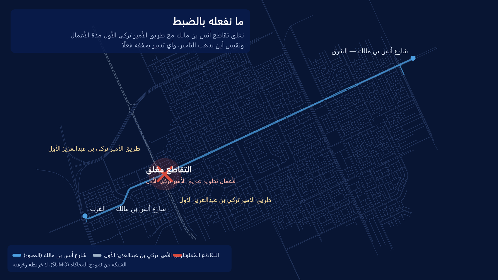
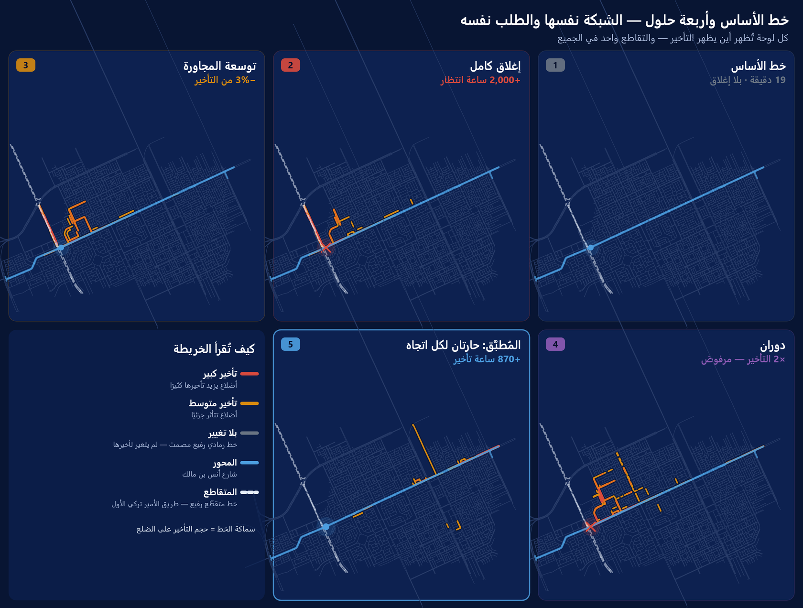
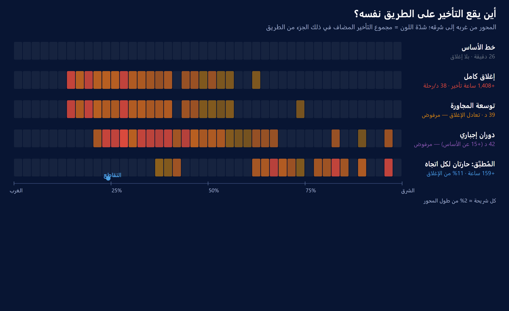
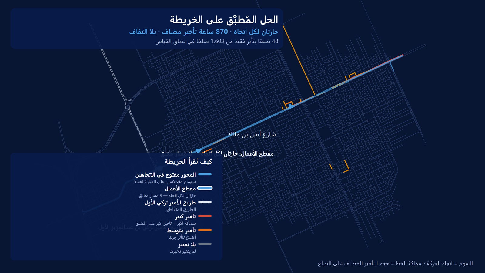

الحلول — أربعة أذرع، وقياس واحد
كل حل شُغّل على شبكة الممر نفسها وبنفس الطلب، خمس مرات. المقارنة على ساعات التأخير في نافذة الذروة (٤ ساعات) — لا على الرأي.
الكثافة — أين يتراكم التأخير؟
المرجع — الإغلاق الكامل مقابل المُطبَّق
المُطبَّق على الأرض — كيف يعمل
توصيات الوكيل
كيف اختُبر كل حل
الحلول على الخريطة — كيف تبدو على شبكة الطرق؟
أربع صور تُغني عن صفحة نص: موقع المشكلة، والأذرع المختبرة في صورة واحدة، وكثافة التأخير على طول الطريق، ثم المُطبَّق على الأرض كما يعمل. كل رقم في هذه الصور يُقرأ من ملف بيانات مُولَّد، لا يُكتب بيد.




الصور تُولَّد بـ build/build_maps.py من data/solutions.json وruns/damage_*.edges.csv.
جولات طريق أنس بن مالك — الشرق ← الغرب
جولات متعددة على الممر خلال جلسة قياس واحدة، مسجّلة على جهاز القياس المثبّت في المركبة.
ما يراه المشاهد
- —
- —
- الأخضر = مسار المركبة المقيس؛ الكهرماني والأحمر = أجزاء دون 40 كم/س.
- الخط الرمادي = شبكة الشوارع كما يراها نموذج المحاكاة، لا خريطة زخرفية.
- عند فجوة في السجل يُقطع الأثر ولا يُوصل بخط مستقيم.
source: data/anas.json · data/_geo_meta.json
التحقق الميداني — المحاكاة مقابل القياس على الممر
…
شبكة المحاكاة هنا هي شبكة المدينة نفسها، لا رسم توضيحي: أُسقِط عليها أثر ميداني حقيقي متكرر على الممر، وقُوِّم الاتفاق مقطعاً بمقطع خلال الوقت الفعلي للجلسة. اتفاق المحاكاة مع القياس هو ما يجعل التوسّع من ممر إلى مدينة مسألة توسيع وقياس، لا وعداً.
إعادة تشغيل الرحلة على الشبكة
حدود القياس — تُقرأ مع الأرقام
الانحراف مقطعاً بمقطع
…
سلسلة الأدلة
…
المنهجية والحدود — بلا مبالغة
ما يثبته هذا النموذج اليوم، وما لا يثبته بعد، وكيف يصبح ممرٌ مقيس مرحلة أولى لتوأم رقمي لمدينة كاملة.
سلسلة القياس
جهاز قياس مثبّت في المركبة يسجّل الموقع والسرعة والاتجاه كل ثانية، ثم تُنقل السجلات الخام إلى المستودع، فتُبنى منها النقاط والمقاطع، ثم تُطابق على شبكة SUMO المستخرجة. الأثر المرئي هو الأثر نفسه لا إعادة رسم.
حدود يجب أن تُقرأ مع الأرقام
- المقارنة تُجرى على أجزاء المسار الواقعة على الممر وشبكته؛ ما خرج عن الممر إلى طرق أخرى لا يُحسب خطأً على النموذج.
- الدقة تُحسب على المقاطع المتصلة فقط؛ فجوات السجل تُستثنى وتُذكر منفصلة.
- القياس في يوم واحد لمركبة واحدة — إثبات دقة على ممر، لا معايرة إحصائية لأسطول ولا لساعات الذروة.
- ساعة الجهاز لم تكن مضبوطة على توقيت الرياض لحظة القياس؛ الطوابع في الملف بتوقيت UTC ويُعرض المحلي بإضافة ثلاث ساعات.
- المقطع بلا إشارات ضوئية — لأن الممر كذلك في الواقع، لا لأن النموذج عاجز عنها.
من الممر إلى المدينة — مسار التوأم الرقمي
هذا النموذج مرحلة أولى لا منتج نهائي. القصد أن يعكس التوأم الرقمي حركة الرياض كاملة وحيّة، لا أن تُعمَّم نتيجة ممر على مدينة كاملة.
- الممر — الآن: قياس ميداني متكرر، وشبكة مستخرجة، ومعايرة، ثم واجهة تحكم. دقته مقيسة لا مُعلنة.
- الشبكة الفرعية: تكرار السلسلة نفسها على ممرات مترابطة، مع مصادر عدّ مروري دائمة بدل جهاز قياس واحد.
- المدينة الحيّة: ربط الشبكة الكاملة ببيانات الحركة الحيّة، فتُقرأ حالة المدينة الراهنة وتُدار، لا تُقدَّر.
كيف تُقرأ هذه الصفحة
كل رقم في هذه الواجهة يُقرأ من ملف بيانات مُولَّد بسكربت، ولا رقم مكتوب بيد. يحرس ذلك سكربت تحقق يفشل إن اختلف رقم في الصفحة عن ملفه.